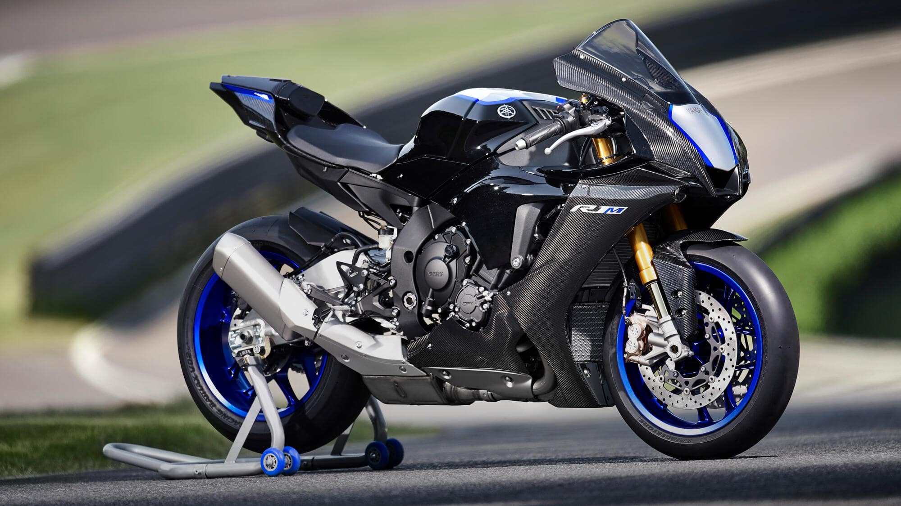
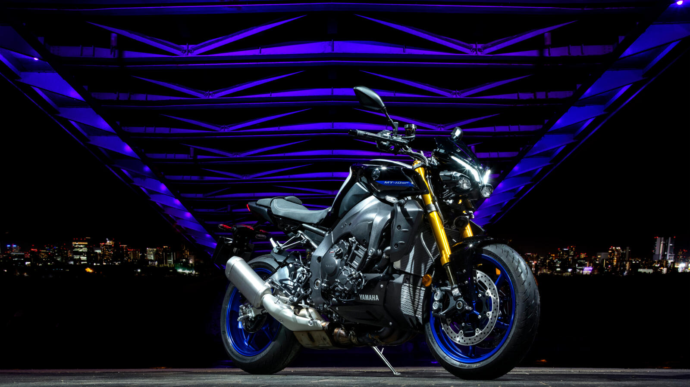
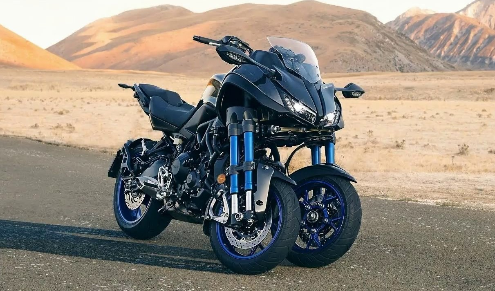

ANA SAYFA
MOTOSİKLETLER
İLETİŞİM
MOTOSİKLETLER

R1M
FİYAT: 660.000.00 ₺ 610.990,00 ₺
- M1'den ilham alan karbon gövde
- Öhlins Elektronik Yarış Süspansiyonu (ERS)
- Öhlins NPX kavitasyon önleyici gaz çatalları
- Hafif karbon kuyruk
- İşlenmiş üretim numarası
- Fren Kontrolü (BC) sistemi
- Motor Freni Yönetimi (EBM) sistemi
- 998 cc cross plane (çapraz düzlem) teknolojisine sahip motor
- APSG gaz kelebeği
- Başlatma Kontrol (LCS) sistemi
- Bridgestone Battlax RS11 lastikler - 190 genişlikli arka
- Seçkin CCU, kablosuz ayar sağlar
- 6 eksenli Atalet Ölçüm Birimi (IMU)
- Yüksek teknolojili elektronik kumanda özellikleri

MT10 SP
FİYAT: 610.000.00 ₺ 560.500,00 ₺
- Gen 2 Öhlins Elektronik Süspansiyon
- 3 parçalı alt koruma kapağı
- Örgülü fren hortumları
- Özel Icon Performance rengi
- Brembo radyal ana silindir
- 998 cc EU5 CP4 motor
- Seçilebilir PWR modlarıyla APSG gaz kelebeği
- Titanyum egzoz sistemi
- Yukarı ve Aşağı Hızlı Vites Değiştirme Sistemi
- Eksiksiz sürücü yardımı paketine sahip 6 Eksenli IMU
- Sürüş Modu seçimiyle 4,2 inç TFT Gösterge
- Hız Sabitleyici ve Hız Sınırlayıcı

NİKEN GT
FİYAT: 479.000.00 ₺ 429.900,00 ₺
- Her mevsime uygun, yüksek teknik özellikli Sport Touring aracı
- Gelişmiş yatabilen üç tekerlekli teknolojisi
- Derin eğilme açısı, maksimum 45 derece
- Hibrit çelik ve alüminyum şasi
- 847 cc, 3 silindirli, sıvı soğutmalı, DOHC CP3 motor
- Farklı, cesur ve eşsiz 3 tekerlekli tasarım
- Sport Touring sınıfının en yenilikçi tasarımı
- Ackerman direksiyon, çift baş aşağı ön çatallar
- Rakipsiz viraj alma deneyimi
- Yüksek teknolojili kavrama, güven ve fren hissi
- Tamamen ayarlanabilir arka süspansiyon
- TCS, QSS, A&S debriyaj, D-MODE, Hız Sabitleyici